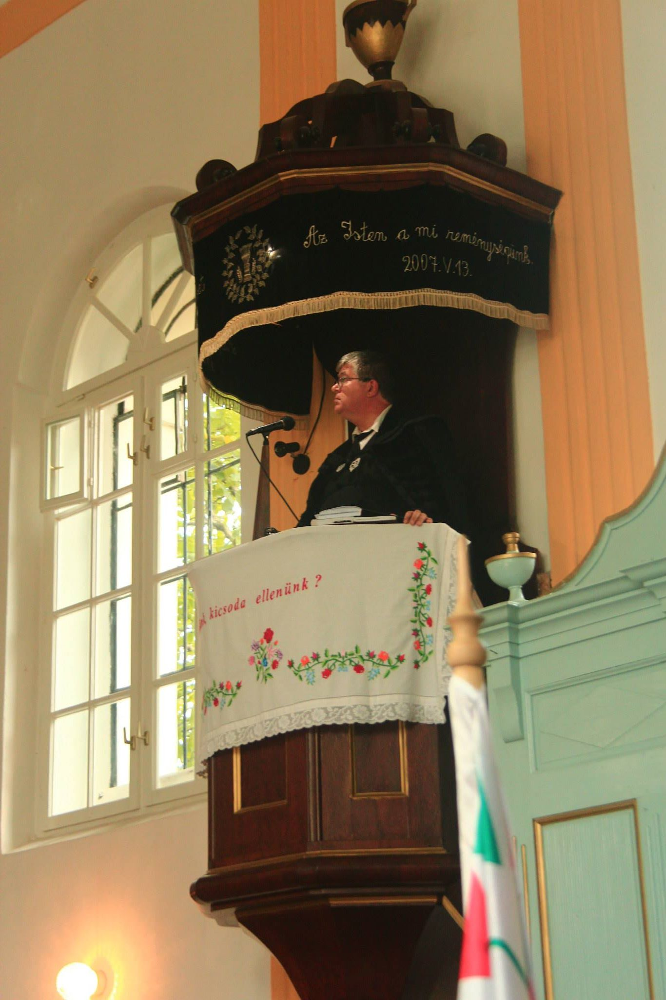

A gyülekezet jelenlegi lelkipásztora
Sebestyén László Ede
1969 április 17.-én születtem az Arad megyei Kisjenőn. Nagykárolyban nőttem föl, ott is érettségiztem. Lelklipásztori szolgálatot 1995 szept.15.-étől, a kolozsvári teológiai tanulmányok befejezése után Hosszúmezőn végeztem, majd 2015 június 1-től Köröstárkányban végzek
A templom rövid története

Köröstárkány és a templom
Köröstárkány az 1332-es pápai tizedjegyzékben szerepel először Tharkan néven. A falu nevét valószínüleg egy török-tatár eredetű méltóságnévből kapta. 1422-ben színmagyar közösségként említik a feljegyzésekben. Az akkori templom gótikus stílusban épült. Freskói hasonlíthattak a magyarremetei templomban látható freskókhoz. Az egyházközségnek egy értékes harangja is volt, mely 1520-ban készült.
Reformáció köröstárkányban
A reformáció az 1500-as évek végén terjed el a környéken. Az új hit terjedéséhez a vidékről származó Belényesi Gergely, a Belényesen tanító Méliusz Juhász Péter és a városban szolgáló, korábban dunántúli püspök, Pathay István járultak hozzá tevékenyen. 1606-re Bethlen Gábor fejedelemsége idején Tárkány már teljesen református lesz és virágzó egyházi élettel rendelkezik. 1622-ben Körösi András a falu lelkipásztora. A közösséget sok csapás éri a következő évtizedekben török, német és sokszor a magyar is rabolja, a lakosságot a járványok pusztítják. A falu azonban Istenbe vetett hittel mindig talpra áll.
Az új, jelenlegi templom
 1841-ben határozták el, hogy a szűkösnek bizonyult régi templom helyett egy nagyobbat építenek. 1844-re készült el a templom, amit nem sokáig használhatnak, ugyanis 13 év múlva, 1857-ben leég. A templomot 1859-re újítják fel teljesen, bár a belső tér évekig készül. 1860-ban az alsó karat, 1869-ben pedig a felső karzat készül el. A padok és a karzatok mellvédjét 1870-ben festi le egy helyi mester sötétkék alapon színes virágos mintával.
1841-ben határozták el, hogy a szűkösnek bizonyult régi templom helyett egy nagyobbat építenek. 1844-re készült el a templom, amit nem sokáig használhatnak, ugyanis 13 év múlva, 1857-ben leég. A templomot 1859-re újítják fel teljesen, bár a belső tér évekig készül. 1860-ban az alsó karat, 1869-ben pedig a felső karzat készül el. A padok és a karzatok mellvédjét 1870-ben festi le egy helyi mester sötétkék alapon színes virágos mintával.
A mai napig többszörös javításon megy keresztül a templom. Nagyobb méretű javítást 1924-ben eszközölnek rajta. Ekkor festik le egyszínű világos kékre a templom padjait. Az orgonát 1955-ben vásárolják a nagyvárad-olaszi egyházközségtől 150 évi használat után. A toronyban 2 harang szolgál. A kis-harang 1901-ből, a nagy-harang 1923-ból való volt, megrepedt, helyébe újat öntettünk 2017-ben.
A gyülekezeti élet
Egyházközségünkben a 282 családban 877 lélek van nyílvántartva.
Egy vasárnap délelőtti Istentiszteleten átlag 150-en, míg egy vasárnap délutáni Istentiszteleten átlag 55-en veszünk részt.
A gyülekezeti bibliaórákon átlag 19-en, az ifjúsági bibliaórákon átlag 16-an vesznek részt.
A reggeli áhitatok alkalmain 7-10 személy szokott részt venni.
A hitoktatói szolgálatot az iskolában Halász Rozália vallástanárnő végzi, míg a gyülekezeti vallásórákat Sebestyén Anna-Enikő kántornő vezeti.
A konfirmációi előkészítés 3 csoportban zajlik a lelkipásztor vezetésével.
Köröstárkányi reformátusként mi lehet a célom?
Sokféle rohangálásom közepedte ott legyek, ahol lennem kell, azt tegyem, amit tennem kell!
E közben Salamonnal együtt csodálkozzak rá Isten nagy tetteire s az Ő akaratához igazodó életemmel megtanuljam becsülni azt, ami örökké megmarad.
Minden más kiesik az idő rostáján, de az Ő szava megáll.
"Rájöttem, hogy mindaz, amit Isten tesz, örökké megmarad, nincs ahhoz hozzá tenni való és nincs belőle elvenni való. Azért rendezte Isten így, hogy féljék őt. Ami volt, régóta megvan és ami lesz, már régen megvolt, és az Isten előkeríti azt, ami tovatűnt."
(Prédikátor 3,14-15)